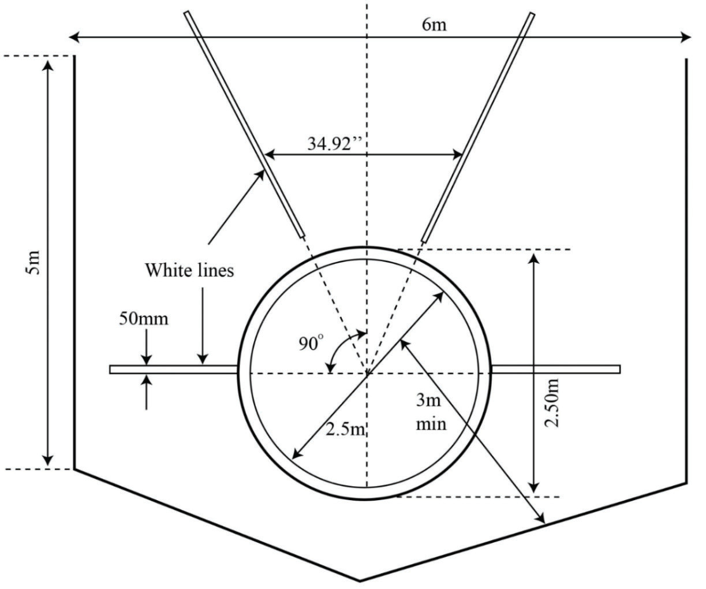

Discus throwing area
The throwing area for discus consists of the throwing circle, cage and landing zone, also called the sector area. The throwing circle is an area where players take a start and complete the throw. The diameter of the throwing circle is 2.5 m. The cage is a U-shaped netted or metal fenced to prevent errant throws from injuring officials, spectators and other athletes. The landing zone, is an area marked by two lines forming an angle of 34.92 degrees from the centre of the circle, where the discus lands, Figure 2.13.

Discus
The major discus throwing equipment is a discus. It is a plate-like implement made from various materials such as rubber, wood and metals. The diameter and weight of the discus for women and men are 18 cm and 1 kg, and 22 cm and 2 kg, respectively. The shape of the discus is circular often paired with a case that protects it from damage, Figure 2.14.